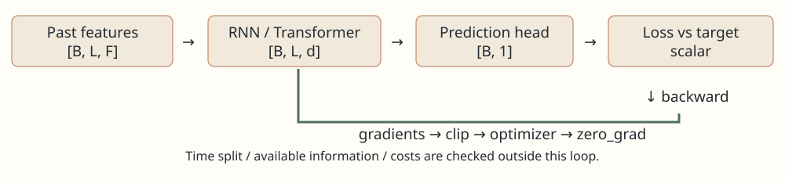

复习路线与知识盘点
本书服务于量化研究、机器学习研究和开发岗位的笔试面试。学习顺序是先把一次预测与一次参数更新手算清楚，再学如何记住历史，最后学如何从历史中选择信息。这里的“核心”表示依赖与迁移价值，不是未经统计的公司出题频率。
- ★ 核心必会：输入输出形状、链式法则、损失与梯度、SGD/Adam/AdamW、RNN状态、LSTM门、QKV注意力、因果掩码和时间泄漏。
- 研究岗重点：BPTT、梯度裁剪、位置编码、pre-LN残差、学习率调度、损失与业务指标、对照实验。
- 进阶选读：RoPE相对位置推导、KV cache、混合精度、复杂度优化。FlashAttention、SSM、MoE和分布式训练只列后续方向，本书不宣称覆盖完整深度学习领域。
第一轮要求能画架构并标维度；第二轮能手推两个时间步和两次优化更新；第三轮遮住代码，独立实现并解释一个失败案例。每节末尾自测先自己做，熟悉题目不等于能解决新题。
从一段行情到一个预测：符号与形状
★ 核心必会。假设每天收盘后用最近三天的两个特征，预测下一天收益。两个特征可为当日收益与成交量变化；这是教学设定，不保证有预测价值。一条样本是三行两列表，行表示时间，列表示特征。将两条这样的样本装在一起，输入形状为 \(B\times L\times F=2\times3\times2\)：B是同批样本数，L是历史长度，F是每个时点的特征数。
例如第一条样本为 \(X_1=[(1,2),(0,1),(2,0)]\)，数字已作教学缩放。若预测一项收益，标签形状是 \(B\times1\)，不是每个时间步都有一个未来可用的答案。历史特征通常先经过一层线性映射：输入行 \(x\) 与矩阵 \(W\in\mathbb R^{F\times d}\) 相乘再加偏置，输出维度d，称为隐藏维度。
第一列为 \(1\times1+2\times0=1\)，第二列为2，第三列为 \(1-2+1=0\)。整批映射后是 \(2\times3\times3\)。RNN沿时间行更新状态；Transformer让时间行之间通过注意力交换信息；最后的预测头把选定状态从d维映射成一个数。
易错点：batch轴不是时间轴；张量转置只改变排列，不改变哪些信息在预测时可用。训练样本 \((t-2,t-1,t)\) 的标签若用 \((t,t+1]\) 收益，就不能把t+1的成交量放进输入。自测：B=8,L=20,F=5,d=16，线性映射后的形状？答案：8×20×16，权重5×16，偏置16。
目标与泛化：训练分数在惩罚什么
★ 核心必会。回归可用平均平方误差：先逐样本计算预测减真实，再平方后平均。两条真实收益为(1,−1)，预测为(0.5,0)，误差为(−0.5,1)，MSE为 \((0.25+1)/2=0.625\)。对预测的导数为 \(2(\widehat y_i-y_i)/B\)，本例分别−0.5和1。负导数意味着应把该预测提高，正导数意味着应降低。
平方损失最优目标是条件均值，绝对误差对应条件中位数；这两种目标不同。Huber损失在小误差时像平方、大误差时像绝对值，用于降低单个极端值的影响，但不能自动修好重尾估计、异常数据或时间泄漏。若用分类预测上涨，必须区分logit（任意实数分数）与概率（0到1）。数值稳定的二分类交叉熵直接吃logit；不要先sigmoid再传BCEWithLogitsLoss。
z=0时p=1/2；标签y=1，损失约0.6931、梯度−0.5。沿负梯度更新能提高分数，但p高不保证盈利：若70%概率赚1bp、30%概率亏4bp，期望为 \(0.7-1.2=-0.5\)bp，尚未算成本。方向、幅度和决策损失要分别核对。
dropout在训练时随机置零部分激活并缩放保留值；它不是随机删除训练样本。训练与评估模式必须切换。BatchNorm跨批次估计统计量，LayerNorm通常在每个token的隐藏维度上归一化；它们既不等价，也不能替代只用训练期拟合的特征预处理。网络越大越能拟合训练样本，也可能更容易记住噪声；先比较同一数据边界下的线性、树模型与简单序列基线。
自测：分类准确率提高而成本后收益下降，是否证明实现错误？答案：未必。损失、收益幅度、仓位、换手与成本不同；先拆开验证，再定位。
优化基础一：梯度与反向传播 核心必会
训练网络就是寻找一组参数，让预测误差较小。损失函数把“错得多严重”变成数值；梯度告诉我们每个参数增加一点，损失在当前位置会怎样变化。梯度不是下一次收益的预测，也不是参数应该直接取的值。先看只有一个参数的目标 \(J(w)=(w-3)^2/2\)。它在 \(w=3\) 时为零，在 \(w=0\) 时为 \(9/2=4.5\)。导数 \(g=dJ/dw=w-3\)，所以初始梯度是 \(-3\)：增加一点 \(w\) 能降低损失。
导数为何是 \(w-3\)？令中间量 \(r=w-3\)，则 \(J=r^2/2\)。先对 \(r\) 求导得到 \(dJ/dr=r\)，再乘 \(dr/dw=1\)，因此 \(dJ/dw=r\times1=w-3\)。这个“从结果沿运算链往回乘”的规则就是链式法则；反向传播把同样的规则用于网络，并复用公共中间结果。
真正算一次两层网络的反向传播
输入 \(x=2\)，目标 \(y=3\)，模型先计算 \(z=ax\)，再计算 \(h=\max(0,z)\)，最后输出 \(\hat y=bh\)。\(\max(0,z)\) 叫 ReLU：负数变零，正数保留。初始 \(a=b=1\)，所以前向过程为 \(z=2,h=2,\hat y=2\)，损失 \(J=(\hat y-y)^2/2=1/2\)。反向第一步 \(dJ/d\hat y=\hat y-y=-1\)；第二步 \(d\hat y/db=h=2\)，所以 \(dJ/db=(-1)\times2=-2\)。传向隐藏层有 \(dJ/dh=(-1)\times b=-1\)。由于 \(z=2>0\)，ReLU 此处导数为 1，故 \(dJ/dz=-1\)。最后 \(dz/da=x=2\)，得到 \(dJ/da=-2\)。
学习率 \(\eta=0.1\) 表示沿负梯度走多远。两个参数都用旧参数处计算的梯度同时更新，\(a'=1-0.1(-2)=1.2,b'=1.2\)。重新前向得 \(\hat y'=1.2\times(1.2\times2)=2.88\)，新损失为 \((2.88-3)^2/2=0.0072\)，确实下降。若算完 \(b\) 的梯度就先更新 \(b\)，再算 \(a\) 的梯度，已经改变了求导点，不是这一次标准反向传播。
向量情形只是同时保存多个偏导数：\(\nabla J=(\partial J/\partial w_1,\ldots,\partial J/\partial w_d)\)。计算图是运算及其依赖关系的记录；自动微分根据图计算精确到浮点误差的链式导数，不是依靠试很多个参数变化来估计。小批量是一次取一部分样本估计梯度，因而梯度可能含噪声。量化中还要注意同一天股票、相邻时间窗口往往相关，不能把批量大小当作独立样本数量。
自测与答案
若初始 \(a=-1,b=1,x=2\)，ReLU 分支发生什么？答：\(z=-2,h=0\)，\(dJ/db=0\)，ReLU 负区间导数为零使 \(dJ/da=0\)。即使误差大，梯度也可能为零；先检查激活与计算图，不应只把学习率调大。
RNN：把历史压进一个不断更新的状态
核心必会：能手算一次状态更新，说明反向传播为什么要穿过时间，并判断梯度如何缩小或放大。RNN（循环神经网络）在各时间点复用同一组参数，适合建立序列模型基线；是否值得采用，需要在相同数据与验证规则下比较。
先把输入、状态和目标分清
假设我们每天观察两个特征：当天收益率与成交量变化。一天的输入是长度为 2 的向量 \(x_t\)；\(t\) 表示第几天。模型还保留一个长度为 \(H\) 的内部摘要 \(h_t\)，称为隐藏状态。它不是实际账户持仓，而是模型自己学出的数字。\(F\) 表示每个时间点的特征数，例中 \(F=2\)。状态按下面的规则更新：
\(W_x\) 的形状是 \(H\times F\)，把输入变为 \(H\) 个数字；\(W_h\) 的形状是 \(H\times H\)，把旧摘要变为新摘要的原材料；\(b\) 是 \(H\) 维偏置。\(\tanh\) 逐元素把数值压到 −1 与 1 之间，提供非线性。若没有这一步，叠加很多步仍只是输入的线性组合。最后可用 \(\hat y_{t+1}=w^Th_t+c\) 预测下一天的一个目标，\(w\) 是 \(H\) 维权重，\(c\) 是标量偏置。
手算一个最小例子：只有一个输入和一个状态，设 \(h_0=0\)、\(W_x=1\)、\(W_h=0.5\)、\(b=0\)，输入依次是 \(x_1=1,x_2=0\)。第一天 \(a_1=1+0.5\times0=1\)，故 \(h_1=\tanh(1)\approx0.7616\)。第二天 \(a_2=0+0.5\times0.7616=0.3808\)，故 \(h_2\approx0.3634\)。虽然第二天输入为零，第一天的信息仍通过状态留下了影响。
BPTT：最后的误差怎样回到第一天
BPTT 是“沿时间展开的反向传播”：先把两天的同一个单元画成先后两次计算，再从最后的损失往前求导。同一参数在每一天都使用，所以参数梯度要把各天的贡献相加。这里先只看对初始状态的梯度。对标量 RNN，\(\tanh'(a)=1-\tanh^2(a)\)，因此：
代入刚才的结果：第一段导数是 \((1-0.7616^2)\times0.5\approx0.2100\)，第二段是 \((1-0.3634^2)\times0.5\approx0.4340\)，乘起来约 \(0.0911\)。若损失对 \(h_2\) 的导数为 1，对 \(h_0\) 的导数便只有约 0.0911。不是第一天没有用，而是经过多次乘法后训练信号弱了。
为了单独看乘法效应，令所有输入和状态都为零，此时 \(\tanh'(0)=1\)。若循环权重为 0.5，两步的导数就是 \(0.5^2=0.25\)，二十步则为 \(0.5^{20}\approx9.54\times10^{-7}\)，这叫梯度消失。若权重为 2，两步就是 4，二十步为 1,048,576，这叫梯度爆炸。真实向量模型要看一串雅可比矩阵的乘积；不能仅凭某个权重绝对值大于 1 就断言一定爆炸，因为激活函数与方向也参与乘法。
梯度裁剪是把过大的总梯度按比例缩短：若范数 \(\|g\|\) 大于阈值 \(c\)，改用 \(cg/\|g\|\)。它控制本次更新的幅度，不能恢复已经消失的长期信号。截断 BPTT 是只让梯度回传最近若干步，以节约内存；隐藏状态可以继续传递，但更早的梯度被人为截断，不能声称模型学到了任意远的依赖。状态跨批次携带时必须保证是同一资产、正确时间顺序，并在规定边界清零，验证集不能继承训练后面时间点的状态。
LSTM 与 GRU：为什么多几扇门会改变记忆方式
核心必会：LSTM 区分“长期记忆”与“对外输出”，GRU 用一个状态完成更新；门是可学习的逐元素系数，不是人工指定的 if 判断。
LSTM 的一小步，每个数都算出来
LSTM 表示长短期记忆网络。除 \(h_t\) 外，它引入记忆状态 \(c_t\)。先把旧输出 \(h_{t-1}\) 与新输入 \(x_t\) 拼接，再经过不同的线性层。符号 \(\sigma(z)=1/(1+e^{-z})\) 把数变为 0 到 1；\(\odot\) 表示相同位置的数字相乘。
遗忘门 \(f_t\) 决定旧记忆保留几成；输入门 \(i_t\) 决定候选内容 \(g_t\) 写入几成；输出门 \(o_t\) 决定本步向外露出多少。比如标量旧记忆为 0.4，本步三个门的线性层输出都为 0，因此 \(f=i=o=\sigma(0)=0.5\)。候选内容的线性层输出取 \(\operatorname{arctanh}(0.2)\approx0.2027\)，经过 tanh 后 \(g=0.2\)。于是旧记忆保留 \(0.5\times0.4=0.2\)，新内容写入 \(0.5\times0.2=0.1\)，合计 \(c_t=0.3\)；向外输出 \(h_t=0.5\tanh(0.3)\approx0.1457\)。记忆 0.3 和输出 0.1457 是不同变量。
沿记忆加法通道、暂时固定门值时，\(\partial c_t/\partial c_{t-1}=f_t\)。如果门接近 1，这条直接路径可以保留较强梯度；但门值也依赖旧状态，完整梯度还有其他路径。因此“LSTM 彻底解决梯度消失”是错误回答。它提供更容易学习长期信息的结构，实际仍受门饱和、数据与序列长度影响。
GRU 与参数量为什么不同
GRU 是门控循环单元，没有独立的 \(c_t\)。在一种常见写法中，重置门 \(r_t\) 控制旧信息怎样参与候选状态，更新门 \(z_t\) 控制旧状态保留比例：
这里候选状态采用 PyTorch 的计算顺序：先对旧状态做线性变换，再乘重置门。其他文献可能先重置再线性变换，通常不等价。若 \(h_{t-1}=0.4,n_t=0.2,z_t=0.75\)，输出是 \(0.25\times0.2+0.75\times0.4=0.35\)；\(z\) 越大越偏向保留旧状态，回答前要先说明使用哪个门的定义。
单层、单方向、无投影时，RNN 有一套输入矩阵与循环矩阵；LSTM 有四套（四种门/候选）；GRU 有三套。若每套采用一个偏置，参数分别是 \(H(F+H+1)\)、\(4H(F+H+1)\)、\(3H(F+H+1)\)。PyTorch 为输入与循环各保留一个偏置，所以计数中的 1 改为 2。取 \(F=2,H=3\)，单偏置 LSTM 为 \(4\times3\times6=72\)，PyTorch 为 \(4\times3\times7=84\)。实际面试应说明偏置约定、方向数与层数；双向模型不只是把最后输出变大，参数也增多。
双向 RNN 在同一个窗口内从前往后、从后往前各算一次。如果窗口完全位于预测时刻之前，最终窗口输出可以用于预测未来；但不能让每个时刻的输出读取它之后尚未发生的数据，再声称是逐时刻实时预测。是否泄漏由任务的信息边界决定，不能仅凭“bidirectional”这个名字判断。
注意力：用可计算的相似度选择历史信息
核心必会：理解 Q、K、V 的来源、矩阵尺寸、softmax 数值和 mask 的作用。注意力不是“模型自动理解重要性”的解释，而是一套可写下来的加权求和。
先算两个 token，不背整张结构图
token 在这里就是序列中的一个位置，可以是一分钟、一日或一个时间块，不一定是词。一个样本 \(X\) 有 \(L\) 行、\(D\) 列：\(L\) 是位置数，\(D\) 是每个位置的表示维数。用三个可训练矩阵得到查询 \(Q=XW_Q\)、键 \(K=XW_K\)、值 \(V=XW_V\)。查询表示“我用什么特征找信息”，键用于与查询比较，值是实际被聚合的内容。单个头若键维度为 \(d_k\)、值维度为 \(d_v\)，则 \(Q,K\) 的尺寸为 \(L\times d_k\)，\(V\) 为 \(L\times d_v\)。
\(S\) 是 \(L\times L\) 的分数表，第 \(i\) 行给位置 \(i\) 对各位置的评分。softmax 对每行分别计算，得到非负且和为 1 的权重。设两个位置经过投影后的查询、键、值分别是 \(Q=(1,0)^T\)、\(K=(0,\ln3)^T\)、\(V=(2,6)^T\)，它们都是两行一列，所以 \(d_k=1\)。分数表第一行为 \((0,\ln3)\)，指数变成 \((1,3)\)，除以总和 4 得权重 \((1/4,3/4)\)，输出为 \(2/4+18/4=5\)。第二行查询为零，分数均为零，权重各 1/2，输出为 4。整个输出为 \(O=(5,4)^T\)。这些数是一个投影后的玩具算例，不能把第二行“平均”误解成任何输入都会平均。
为什么除以 \(\sqrt{d_k}\)？若查询和键各分量近似独立、零均值且方差为 1，点积是 \(d_k\) 个乘积之和，方差约为 \(d_k\)。除以平方根后方差约为 1，避免维度增长单独把 softmax 推向非常尖锐的分布。这是基于假设的尺度分析，不是所有训练分布下的严格方差保证。
causal mask 和 padding mask 解决不同问题
causal 表示因果可见性：第 \(i\) 个位置只能看自己及更早位置。把所有 \(j>i\) 的分数在 softmax 之前设为负无穷，指数便为零。上例第一行变成 \((0,-\infty)\)，权重为 \((1,0)\)，输出从 5 变成 2；第二行不变，输出仍为 4。不能在 softmax 之后简单把未来权重清零而不重新归一化，否则剩余权重之和不再是 1。
padding 是为了凑成同长批次而补入的空位置。padding mask 禁止把空位置当成键参与加权；它不必自动把空查询的输出变为零，所以计算损失、池化或取最后状态时，还必须避开空位置。若某行的所有键都被屏蔽，softmax 可能出现未定义结果，数据与 mask 必须保证有效查询至少有一个可见键。
对一个只含过去的窗口预测下一天，窗口内部使用双向 attention 可以合法；对同一长序列里的每个时刻同时训练下一步目标，就需要 causal mask。两者任务不同。即使 mask 完全正确，全数据标准化、使用收盘后才发布的特征、未来修订数据、跨集合重叠标签也仍可能泄漏；mask 只约束 attention 读哪些位置。
Transformer：把注意力、逐位置网络与稳定训练通道接起来
核心必会：能顺着形状讲完一个 block，区分归一化位置，知道位置编码缺失时丢掉什么；RoPE 与缓存作为进阶理解，不把是否背过所有变体当作基础能力。
完整的 Pre-LN block
block 是反复堆叠的基本计算单元。Pre-LN 表示先做 LayerNorm，再进入注意力或前馈网络。LayerNorm 是对每个位置自己的 \(D\) 个特征做标准化，随后用可学习的缩放和平移调整；它不沿时间轴收集未来样本。若一个位置的特征是 \((1,3)\)，均值为 2、方差为 1，忽略很小的数值稳定常数后标准化结果为 \((-1,1)\)。可学习缩放初始取 1、平移取 0 时结果不再改变。
MHA 是多头注意力；MLP 是多层感知机，在这个 block 中通常是两层线性变换加激活函数。残差中的加号要求前后形状一致，都是 \(B\times L\times D\)，\(B\) 为批量内样本数。残差让子模块学习对输入的修正，并给梯度提供直接路径；它不是把信息无损保留的保证。Dropout 在训练时随机把部分激活置零并缩放剩余激活，以减少对固定神经元组合的依赖；推理时需切换 eval 模式关闭随机丢弃。
多头不是把序列分成几段，而是用几组投影从不同表示子空间计算 attention。若 \(D=8\)、头数为 2，每个头用 4 维键和值，分别得到 \(B\times L\times4\) 输出；按特征维拼回 8 维，再乘一个 \(8\times8\) 输出矩阵。一般实现要求 \(D\) 能被头数整除。各头能学习不同关系，但不保证每头自动对应一个可解释的金融概念。
MLP 对每个位置使用同一套参数，不在这一子层内混合不同时间点。设 \(D=8\)，中间宽度 \(D_{ff}=32\)，第一层把 8 维变为 32 维，做 GELU 等逐元素非线性，再由第二层回到 8 维，才能与残差相加。时间点之间的交流主要来自 attention。Post-LN 则在残差相加之后归一化；原始 Transformer 采用 Post-LN，这里解释和代码使用 Pre-LN，不能把两种计算顺序混为一谈。
为什么必须给模型时间位置
没有位置机制与其他顺序线索的全可见自注意力，对输入排列是等变的：把 token 顺序打乱，输出也按同样方式重排，模型不能仅靠这一层区分“先涨后跌”和“先跌后涨”。绝对位置编码直接给每个位置加上不同向量；正弦编码用不同频率的 sin、cos 构成向量，学习式编码则把位置向量作为参数。
RoPE 是旋转位置编码：将查询和键的相邻两维看作二维向量，在位置 \(p\) 旋转角度 \(p\theta\)。二维旋转矩阵为：
取 \(q=k=(1,0)^T\)，\(\theta=\pi/2\)。位置 0 的查询为 \((1,0)\)，位置 1 的键变成 \((0,1)\)，点积为 0；位置 1 的查询与位置 2 的键为 \((0,1)\) 和 \((-1,0)\)，点积仍为 0。两对位置都相差一步。一般地 \(q_p^Tk_s=q^TR((s-p)\theta)k\)，点积含有相对位置差。实际模型给不同二维对使用不同频率，并不会只用这个四步循环的玩具频率；能处理更长输入不等于长序列外推精度必然可靠。这里只解释 RoPE，下面最小代码用学习式位置编码，两者不要叠加理解为同一实现。
训练、推理与 KV cache：先说清在算哪一种任务
设单层隐藏宽度为 \(D\)，序列长为 \(L\)，忽略批量系数。RNN 每步主要算输入映射和状态映射，总工作量约 \(O(L(FH+H^2))\)，且状态必须按时间顺序更新。标准全注意力的分数与加权和各需约 \(O(L^2D)\)，QKV 投影还需 \(O(LD^2)\)，MLP 约 \(O(LDD_{ff})\)。因此“Transformer 复杂度就是平方”省略了宽度项；短序列大模型也可能由投影与 MLP 主导。朴素实现 attention 权重需 \(O(L^2)\) 内存，FlashAttention 等实现能避免把完整权重表写入高带宽显存，但一般全注意力的精确计算量并不因此变为线性。
训练时，causal mask 允许一次喂入整段序列并并行计算各位置的下一步预测，因为答案只用于损失，未来 token 通过 mask 隔离。推理时，若每步真的需要上一步预测结果作为下一步输入，自回归生成必须一个位置接一个位置。不要把“训练并行”说成“未来所有步可以同时生成”。
KV cache 是把已算过的各层键和值保存下来。假设已经有 \(L\) 个历史位置，新位置只计算自己的 QKV，并用新查询与缓存的 \(L\) 个键比较，attention 的新增工作约为 \(O(LD)\)，另有投影与 MLP 工作；缓存容量每层约 \(O(LD)\)。它省去反复重算历史 token，但每层都要存缓存，不是只存输入层。不能说整个生成过程只需 \(O(L)\)：连续生成 \(T\) 步时，各步注意力读到的历史越来越长，要对各步成本求和。
常规双向 encoder 的历史表示会在加入新 token 后改变，因为旧位置现在也能看见新位置，旧 K/V 不一定继续有效。因果模型的旧位置看不见未来，才容易精确复用缓存。量化中的滚动窗口还有特殊问题：删掉最旧一天后，相对位置、窗口归一化和先前隐藏表示可能改变；不能直接把语言模型 append-only 缓存照搬为固定窗口的精确推理。预测明日一个数的 encoder 通常一次编码整段历史后接一个回归头，不需要自回归 KV cache。
一个最小因果预测器：输入历史，输出一个未来目标
下面输入形状为 \(B\times L\times F\)，输出 \(B\times1\)。假设每条样本已经整理为等长、无 padding 的过去窗口，最后位置的输出用于预测窗口之后的目标。模型包含输入投影、学习式绝对位置编码、Pre-LN encoder block、最终归一化和回归头。causal mask 的上三角为 True，表示这些未来位置不可见；这是 nn.Transformer 的布尔 mask 约定，不能直接套到所有 attention API。模型结构可运行不代表数据与回测已经正确。
import torch
from torch import nn
class CausalRegressor(nn.Module):
def __init__(self, features=3, width=16, heads=2, max_len=64):
super().__init__()
self.project = nn.Linear(features, width)
self.position = nn.Embedding(max_len, width)
layer = nn.TransformerEncoderLayer(
d_model=width, nhead=heads, dim_feedforward=4 * width,
dropout=0.0, activation="gelu", batch_first=True,
norm_first=True)
self.encoder = nn.TransformerEncoder(
layer, num_layers=2, enable_nested_tensor=False)
self.norm = nn.LayerNorm(width)
self.head = nn.Linear(width, 1)
def forward(self, x): # x: [B, L, F], no padding
length = x.shape[1]
if length > self.position.num_embeddings:
raise ValueError("sequence exceeds max_len")
positions = torch.arange(length, device=x.device)
h = self.project(x) + self.position(positions)[None, :, :]
blocked = torch.ones(length, length, dtype=torch.bool,
device=x.device).triu(diagonal=1)
h = self.encoder(h, mask=blocked)
return self.head(self.norm(h[:, -1])) # [B, 1]
if __name__ == "__main__":
torch.manual_seed(7)
model = CausalRegressor()
x = torch.randn(4, 12, 3)
target = torch.randn(4, 1)
prediction = model(x)
assert prediction.shape == (4, 1)
loss = nn.functional.mse_loss(prediction, target)
loss.backward()
assert torch.isfinite(loss)
assert all(torch.isfinite(p.grad).all()
for p in model.parameters() if p.grad is not None)
如果样本有 padding，必须另外传入键填充 mask，并按实际长度取最后有效位置，不能继续盲取 \(h[:,-1]\)。这份代码只使用训练窗口允许的输入，不包括数据切分、特征标准化、训练循环与交易成本；它的验收是形状与梯度正确，不能用一次随机输入成功推出预测有效。数值目标要固定含义，例如次日对数收益；不同预测期限或净收益目标不能混着比较。
面试自测：先独立回答，再核对
- RNN 的权重每个时间点都不同吗？不，时间上共享同一套参数，反向时汇总各时间点对它的梯度；否则参数数会随窗口长度增长，也改变了模型定义。
- 把 RNN 换成 LSTM 就不用裁剪梯度了吗？不是。加法记忆路径改善传播，但其他路径与训练状态仍可能造成不稳定；应检查梯度范数与损失，再决定裁剪阈值。
- 两个键的分数都是 0，值为 2 和 6，输出多少？屏蔽第二键后呢？指数均为 1，权重各半，输出 4；屏蔽后第二键权重为零、第一键为 1，输出 2。
- attention 的 \(L\times L\) 表与 batch 有什么关系？每个样本、每个头各有一张表；常见逻辑形状为 \(B\times n_h\times L\times L\)。高效实现可能不实际存下整张表。
- Pre-LN 与 Post-LN 区别在哪？前者先归一化再进入子层、再与残差相加；后者先子层与残差相加、再归一化。它们不是同一公式换个名字。
- 过去 20 日都已知，用双向 encoder 预测第 21 日合法吗？可以，前提是输入特征在决策时都已知；若用第 20 日的完整窗口回头评估第 5 日的实时预测，就产生泄漏。
- 收益预测 MSE 更低，就应马上交易吗？不能。还需检查可交易时间、方向与排序稳定性、成本、换手、容量，以及真实成交规则。模型评估指标与经济结果是不同验收对象。
优化基础二：用同一题算懂五种更新 核心必会
以下全部从 \(J(w)=(w-3)^2/2,w_0=0,\eta=0.1\) 独立开始，\(g_t=w_{t-1}-3\)。不同优化器第二步的参数已经不同，因此不能给它们强行使用同一个第二步梯度。为手算清楚暂令防止除零的 \(\epsilon=0\)，因为这里分母均非零；实际程序必须使用正的小数。演示参数用于理解，不是量化训练推荐值。
SGD：只看当前方向
更新式 \(w_t=w_{t-1}-\eta g_t\)。第一步 \(g_1=-3\)，\(w_1=0-0.1(-3)=0.3\)；第二步 \(g_2=0.3-3=-2.7\)，\(w_2=0.3+0.27=0.57\)。虽然这道确定性题没有抽样，仍可用 SGD 的更新公式。真实小批量训练中，SGD 用随机选取的样本近似全量梯度。
Momentum：保存带方向的惯性
本节明确采用 \(u_t=\mu u_{t-1}+g_t,w_t=w_{t-1}-\eta u_t\)，取 \(u_0=0,\mu=0.9\)，无阻尼、无 Nesterov。第一步 \(u_1=-3,w_1=0.3\)。第二步 \(g_2=-2.7,u_2=0.9(-3)-2.7=-5.4\)，因此 \(w_2=0.3+0.54=0.84\)。连续同向的梯度累积，来回变化的梯度部分抵消。另有教材写 \(u_t=\mu u_{t-1}+(1-\mu)g_t\)，若学习率不相应调整，数值不会与这里一样；面试先说明约定。
AdaGrad：累计每个坐标走过的梯度平方
令 \(s_t=s_{t-1}+g_t^2\)，更新 \(w_t=w_{t-1}-\eta g_t/(\sqrt{s_t}+\epsilon)\)。第一步 \(s_1=9\)，\(w_1=0-0.1(-3)/3=0.1\)。第二步 \(g_2=-2.9,s_2=9+8.41=17.41\)，于是 \(w_2=0.1+0.29/\sqrt{17.41}\approx0.169502\)。多维参数各有自己的 \(s\)：历史梯度平方大的坐标，之后被更强地缩小。问题是累计量只增不减，有效步长可能越来越小。
RMSProp：只保留逐渐衰减的平方历史
把累计改成指数平均：\(v_t=\rho v_{t-1}+(1-\rho)g_t^2\)，更新仍除以 \(\sqrt{v_t}+\epsilon\)。取 \(\rho=0.9,v_0=0\)。第一步 \(v_1=0.1\times9=0.9\)，\(w_1=0.3/\sqrt{0.9}\approx0.316228\)。第二步 \(g_2\approx-2.683772\)，\(v_2=0.9\times0.9+0.1(-2.683772)^2\approx1.530263\)，故 \(w_2=0.316228+0.2683772/\sqrt{1.530263}\approx0.533179\)。这是未居中、无动量的版本；开头没有 Adam 那样的偏差校正。
Adam：方向平均加平方平均，再校正冷启动
令 \(\beta_1=0.9,\beta_2=0.999,m_0=v_0=0\)。\(m\) 保存带正负号的梯度平均，\(v\) 保存梯度平方平均：
\[m_t=\beta_1m_{t-1}+(1-\beta_1)g_t,\qquad v_t=\beta_2v_{t-1}+(1-\beta_2)g_t^2.\] \[\hat m_t=\frac{m_t}{1-\beta_1^t},\qquad\hat v_t=\frac{v_t}{1-\beta_2^t}.\] \[w_t=w_{t-1}-\eta\frac{\hat m_t}{\sqrt{\hat v_t}+\epsilon}.\]第一步 \(m_1=-0.3,v_1=0.009\)，校正后 \(\hat m_1=-0.3/0.1=-3,\hat v_1=0.009/0.001=9\)，所以 \(w_1=0.1\)。第二步 \(g_2=-2.9\)，\(m_2=0.9(-0.3)+0.1(-2.9)=-0.56\)，\(v_2=0.999(0.009)+0.001(8.41)=0.017401\)。除以 \(1-0.9^2=0.19\) 和 \(1-0.999^2=0.001999\)，得到 \(\hat m_2\approx-2.947368,\hat v_2\approx8.704852\)，因此 \(w_2\approx0.199897\)。
为什么除这两个数？假设梯度始终等于常数 \(g\)，第一步平均只有 \((1-\beta)g\)；递推展开得 \(m_t=(1-\beta)(1+\beta+\cdots+\beta^{t-1})g=(1-\beta^t)g\)，除掉前面的系数就恢复 \(g\)。真实梯度会变化，因此校正主要去除零初始化造成的权重总量不足，不代表已经得到无噪声真梯度。Adam 分母是平方的平均开方，不是梯度的标准差，因为没有减去均值平方。
自测与答案
为什么不能说 Adam 的学习率就是每个参数实际移动的距离？答：还要乘 \(\hat m/(\sqrt{\hat v}+\epsilon)\)。若梯度长期同号且大小相似，该比值接近正负 1，但梯度反向、波动或极小时就不成立。以上例子也不能证明哪种方法普遍更好，只比较了各自规则。
优化基础三：AdamW、正则与衰减 核心必会
L2 正则在原损失增加 \(\lambda\|w\|^2/2\)，\(\lambda\) 是惩罚强度。对一个参数求导得到额外的 \(\lambda w\)，因此把梯度变成 \(g+\lambda w\)。普通无动量 SGD 的更新可改写为 \(w'=w-\eta(g+\lambda w)=(1-\eta\lambda)w-\eta g\)。这里 L2 与直接乘衰减系数确实相同。
自适应方法会给不同坐标不同缩放。先把当前缩放简记成 \(d\)，L2 形式是 \(w'=w-\eta d(g+\lambda w)\)，其中参数惩罚也乘上 \(d\)；解耦衰减是 \(w'=(1-\eta\lambda)w-\eta d g\)。两者的衰减分别为 \(\eta d\lambda w\) 与 \(\eta\lambda w\)，除特殊条件外不同。对真实 Adam，差异更多：把 \(\lambda w\) 混进梯度，还会改变之后的 \(m,v\) 历史；AdamW 仅用数据梯度更新这些历史，并独立收缩参数。
数值核验：取 \(w=2,g=1,\eta=0.1,\lambda=0.1\)，Adam 的初始状态为零，沿用前节参数并忽略 \(\epsilon\)。带 L2 的 Adam 收到梯度 \(1+0.1\times2=1.2\)，第一步校正后方向为 \(1.2/\sqrt{1.44}=1\)，得到 \(w'=1.9\)。AdamW 收到梯度 1，先独立衰减 \(2(1-0.1\times0.1)=1.98\)，再减 \(0.1\times1\)，得到 \(1.88\)。两者不是更换名字的同一算法。
实践可把偏置、归一化的缩放参数单独设置是否衰减；这是建模选择，不能声称所有网络都应该采用同一分组。量化研究要用按时间划分的验证集调 \(\lambda\)，并保持试验次数记录；训练损失更低或衰减更强，都不自动意味着样本外预测更好。
自测与答案
损失里手工加 L2，又给 AdamW 设置 weight_decay，会怎样？答：两种惩罚同时生效，L2 还进入自适应状态，通常不是你原先打算的单次衰减。实现前明确要惩罚损失还是解耦缩参数。
优化基础四：学习率与可靠训练步骤 研究重点
学习率过大可能跨过低损失区甚至发散，过小则改进缓慢。Warmup 是开头若干次更新逐步升到目标学习率，让状态与梯度尺度有适应时间；它不是任何架构都必需。余弦衰减可在 warmup 之后使用：剩余阶段的更新序号 \(s=0,\ldots,T\) 对应 \(\eta_s=\eta_{\min}+(\eta_{\max}-\eta_{\min})(1+\cos(\pi s/T))/2\)。开始为最大值，中点为最大最小值的平均，最后为最小值。日历天、epoch、微批次和参数更新次数是不同单位，调度前先定义单位。
梯度裁剪限制一次更新前的梯度整体长度。若梯度向量为 \((3,4)\)，长度为 5，而阈值为 2，则整体乘 \(2/5\)，得到 \((1.2,1.6)\)，方向保留。逐坐标截断不是同一种规则。裁剪可缓和 RNN 等模型的梯度爆炸，却不能修复未来信息泄漏，也不能让坏标签变好。
梯度累积把多个微批次的梯度相加后只更新一次。若 K 个微批次大小一致，对每个平均损失再除以 K，累积后就是大批次平均梯度。最后一组不足 K 个，应除以实际组大小；若样本数不等，应按样本数加权。Dropout 随机性、BatchNorm 统计和浮点运算顺序会使结果不必严格等于一次大批次前向。
下面是完整的基础训练函数：loader 每个批次大小相同，最后不足一组时自动处理；模型、数据已经移到同一个 device。调度器按成功的参数更新调用，而不是每个微批次调用。为突出顺序，代码采用全精度。
import torch
def train_epoch(model, loader, optimizer, scheduler, device, accum=4):
model.train()
optimizer.zero_grad(set_to_none=True)
n = len(loader)
for i, (x, y) in enumerate(loader):
# Each microbatch has the same sample count.
group_start = (i // accum) * accum
group_size = min(accum, n - group_start)
pred = model(x.to(device))
loss = torch.nn.functional.mse_loss(pred, y.to(device))
(loss / group_size).backward()
if (i + 1) % accum == 0 or i + 1 == n:
torch.nn.utils.clip_grad_norm_(model.parameters(), 1.0)
optimizer.step()
if scheduler is not None:
scheduler.step() # configured per optimizer update
optimizer.zero_grad(set_to_none=True)
# Example: create model first, then run train_epoch.
# optimizer = torch.optim.AdamW(model.parameters(), lr=1e-3,
# weight_decay=1e-2)
AMP 是自动混合精度：选择部分算子用低精度以减少显存和计算成本，并不是把所有变量都改成半精度。FP16 的 GradScaler 先放大损失，使微小梯度不容易下溢；反向后必须先还原梯度，再裁剪。否则你裁剪的是放大后的梯度，会改变有效阈值。使用顺序是 autocast前向 → scale(loss).backward → 整组累积完成 → unscale_(optimizer) → clip_grad_norm_ → scaler.step(optimizer) → scaler.update → zero_grad。整组使用同一 scale，不能每个微批次 update。出现非有限梯度时 scaler 可跳过参数更新，此时按更新次数设计的 scheduler 也应跳过，并记录异常。BF16 的范围不同，不应机械地照搬 FP16 必须缩放的判断。
面试回答顺序：先说明损失和数据批次，再写梯度，再说明优化器状态与更新；最后说验证与排错。选读内容如 Nesterov、AMSGrad、二阶近似优化器，先知道解决什么问题即可，除非具体岗位要求，不必挤占链式法则、AdamW、训练循环与时间切分的复习时间。
自测与答案
累积四个微批次，每个都调用一次 scheduler，但只调用一次 optimizer.step，问题是什么？答：调度进度以微批次跑快四倍；原定一万次参数更新的学习率计划在约二千五百次更新时就结束。若 scheduler 本来按 epoch 配置，则应每个 epoch 调一次，不能套用此处规则。
量化应用：先画时间线，再谈模型好坏
★ 核心必会。模型应接到明确的预测时刻。例如周二收盘后，用周一至周二的数据预测周三收盘收益。周三才发布的修订财务数据，即便字段名写周二，也不能使用。“数据所属日期”和“首次可见时间”是两个不同字段。
切分一个有重叠标签的小例子
一条标签若是未来三天累计收益，则时点t的标签用到t+1、t+2、t+3。假设验证预测从第10天开始。第8天训练样本的标签覆盖9—11，与验证期交叉；第9天的标签覆盖10—12，也交叉，不能当作已完全隔离的历史训练信息。最保守的边界要求训练标签末端严格早于验证预测起点：\(t+3<10\)，故只保留t≤6。第7天是否可保留取决于第10天的准确决策时刻和标签何时已知，不能只凭日期猜。
特征标准化的均值、方差必须只在训练期估计；验证和测试沿用冻结参数。每个滚动窗口可重估，但只能用当时已知资料。交易日之间样本相关，不能把窗口数量直接当独立样本数，也不能把一百次随机种子当一百份独立市场历史。
因果掩码解决哪一层泄漏
若每个位置都预测其下一步，位置i只能注意到j≤i，须屏蔽右上角未来位置。若整段历史都是截止当前已知输入，只在末端做一个预测，历史内部双向注意力本身不构成使用未来市场数据。但为了通用逐位置训练，本书代码采用因果掩码。模型里有causal mask，仍挡不住输入字段来自未来、全样本归一化或标签重叠。
可证伪的基线、消融与最终选择
先比较“始终预测0”、简单线性模型、树模型与小型RNN，再比较Transformer，使用相同可用信息和时间留出。若Transformer新增特征、窗口和搜索预算同时变化，无法把收益归因于架构。消融可依次去掉位置编码、缩短历史、关闭新增特征，并记录哪些变化损害留出表现。若效果只在挑中的一个区间出现，应重查漂移与搜索偏差。
评估至少分三层：预测误差／概率质量；按明确仓位规则得到的毛收益和换手；扣成本、融资和实际成交约束后的结果。IC指横截面或时序上的预测与后续收益相关性，必须写清计算对象、窗口和聚合方式，不是任何高IC都能交易。部署还要测目标硬件上的延迟、吞吐和内存，不能用训练速度代替推理速度。
自测：把同一股票相邻日期随机分进训练和测试，即便没有重复行，安全吗？答案：不保证。历史窗口和未来标签可能重叠，市场状态也相关；应按决策时间和标签区间隔离。
闭卷知识盘点：能否解释、计算并排错
- 画出B×L×F输入、RNN状态、QKV和预测头的形状；说明每个矩阵在做什么。
- 手算两步RNN，解释梯度为什么会成为多个Jacobian（局部导数矩阵）的乘积。
- 说清LSTM的遗忘门、输入门、输出门分别控制什么；细胞状态通路为什么只是缓解而非彻底消除梯度问题。
- 计算两token注意力权重；说明softmax在哪个轴上、sqrt(d_k)为何出现。
- 画pre-LN的完整残差块，说明去掉位置编码后为什么无法一般地区分序列顺序。
- 手算Adam最初两步；解释偏差校正、二阶矩和方差的区别。
- 比较SGD下L2与weight decay的等价条件，再说明Adam下为何不同。
- 列出梯度累积、AMP、裁剪、优化器、调度器和清零的次序，解释最后一个不足累积长度的批次。
- 解释训练并行、逐token推理、KV cache与金融滑窗推理为什么不是同一种成本问题。
- 给一个“有因果掩码却仍泄漏”的反例，再设计能证伪模型优势的对照实验。
验收方式：架构与优化各用两分钟口述；任选数值例遮住答案重算；再改变一个输入形状或时间边界。如果只能背原例，回到对应小节补第一步。这里不提供未经测试的面试通过率承诺。
资料与证据边界
本教材独立编写例题和复习优先级，不声称统计了出题频率，不保证某种架构优于基线或产生盈利。模型公式与接口依据原论文和官方文档核对；代码在CPU执行验证，AMP的GPU执行与实际市场数据表现需另行测试。
Jane Street官方机器学习介绍 · Vaswani 等：Attention Is All You Need · Su 等：RoFormer · PyTorch LSTM · PyTorch GRU · PyTorch TransformerEncoderLayer · Transformer · Kingma 与 Ba：Adam 原论文 · PyTorch Adam · PyTorch SGD · PyTorch AdamW · PyTorch AMP 示例